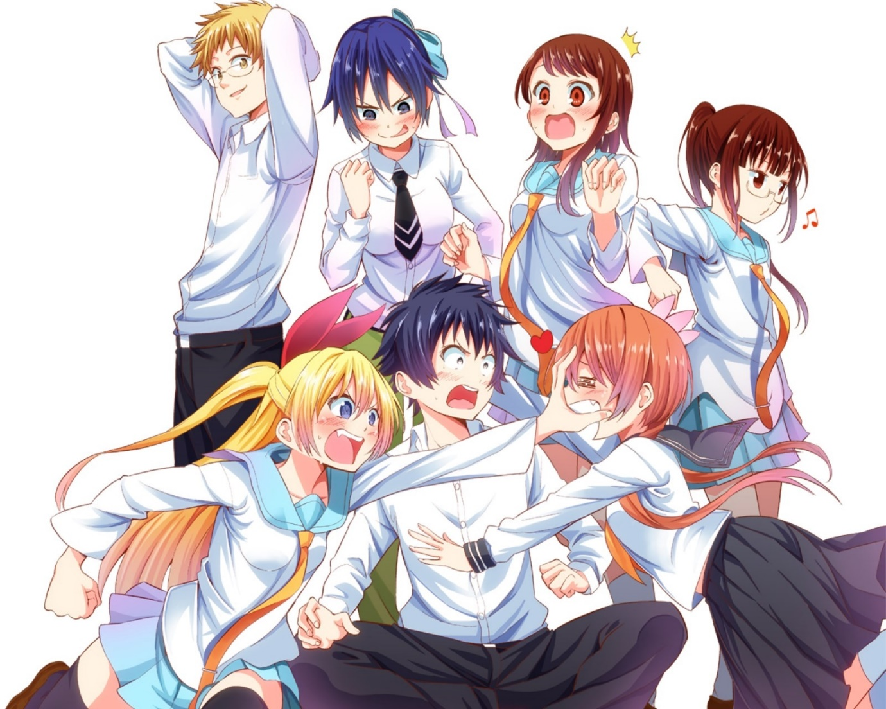
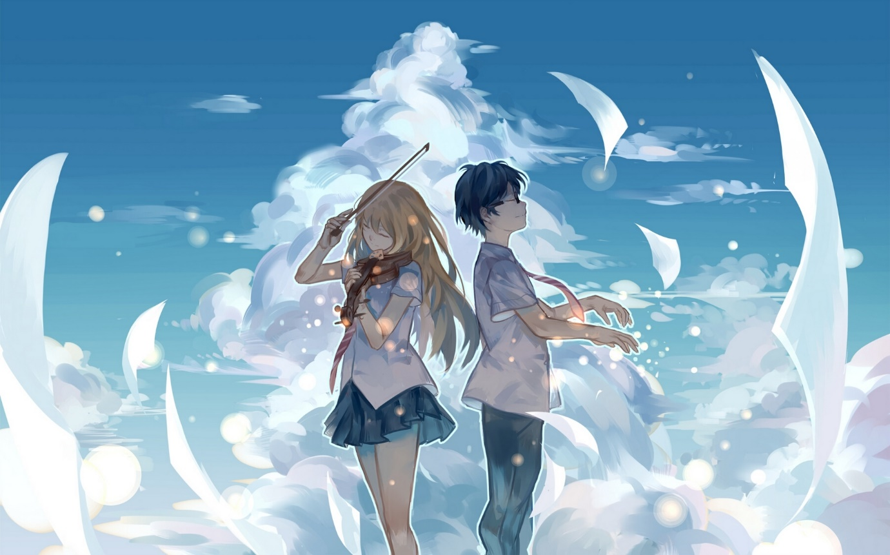

Nisekoi
Nisekoi is a comedy anime where Raku's a normal high schooler, his family heads the notorious yakuza gang the Shuei-Gumi faction. And he's dragged into family affairs when he's forced into a relationship with Chitoge, the daughter of a rival gang's boss.
Mitsuha is the daughter of the mayor of a small mountain town. She's a straightforward high school girl who lives with her sister and her grandmother and has no qualms about letting it be known that she's uninterested in Shinto rituals or helping her father's electoral campaign. Instead she dreams of leaving the boring town and trying her luck in Tokyo. Taki is a high school boy in Tokyo who works part-time in an Italian restaurant and aspires to become an architect or an artist. Every night he has a strange dream where he becomes, a high school girl in a small mountain town.
Your lie in April
Your lie in April is a beautiful romantic story of two musicians who play so that the people around them will never ever forget them. One day Kaori's dies. After Kaori's death, her parents give her letter to Kōsei at her funeral. The letter reveals that she was aware that she was about to die, so she became more free-spirited, both as a person and in her music, in order to not take her regrets to Heaven. She also revealed that she had been in love with Kōsei since she was five, and was inspired to play the violin so that she could one day play with him. Her supposed feelings towards Watari was the lie the series was named after, and they were fabricated in order to get closer to Kōsei without emotionally injuring Tsubaki, who also has limerent feelings towards Kōsei. After finding this out, Tsubaki confronts Kōsei and tells him that she will be by his side for the rest of her life. Kaori also left behind a picture of her as a child coming back from the concert that inspired her, with Kōsei in the background walking back home. Kōsei later frames this picture.